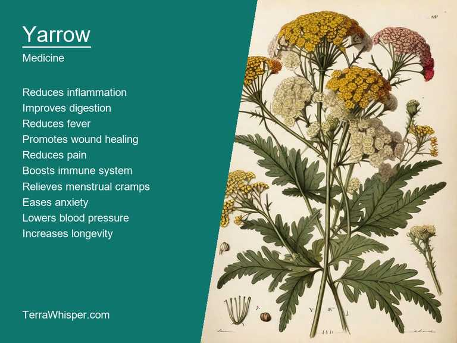
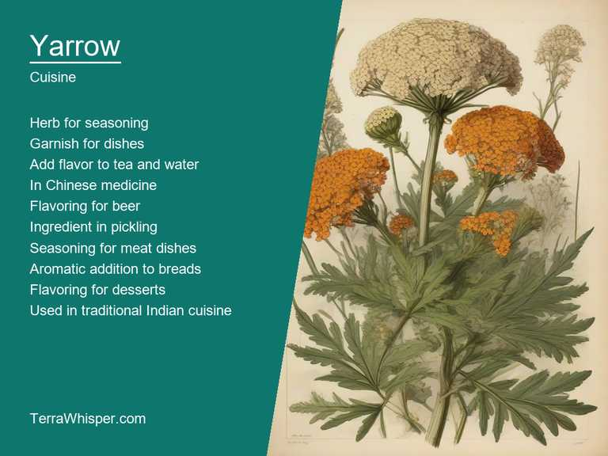
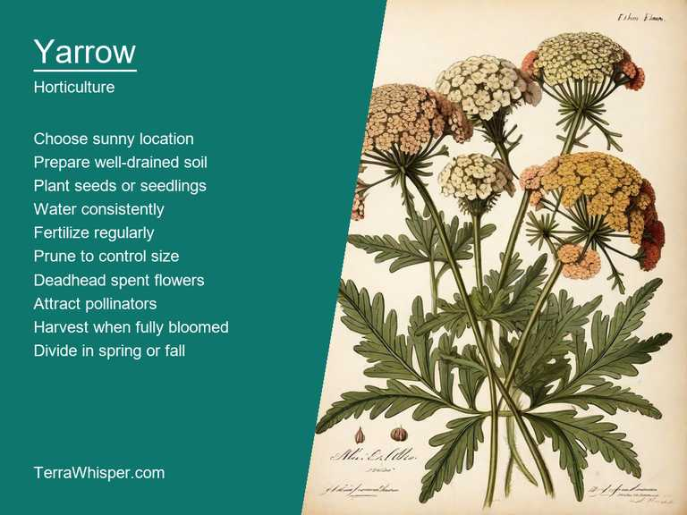
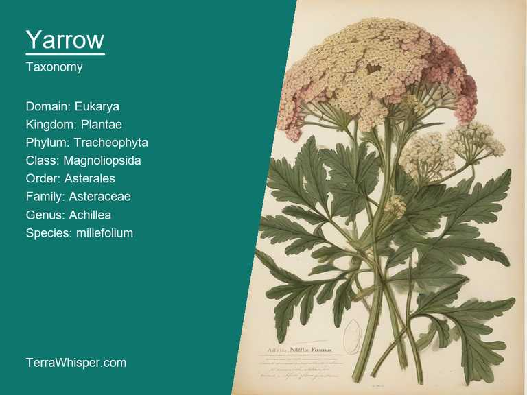
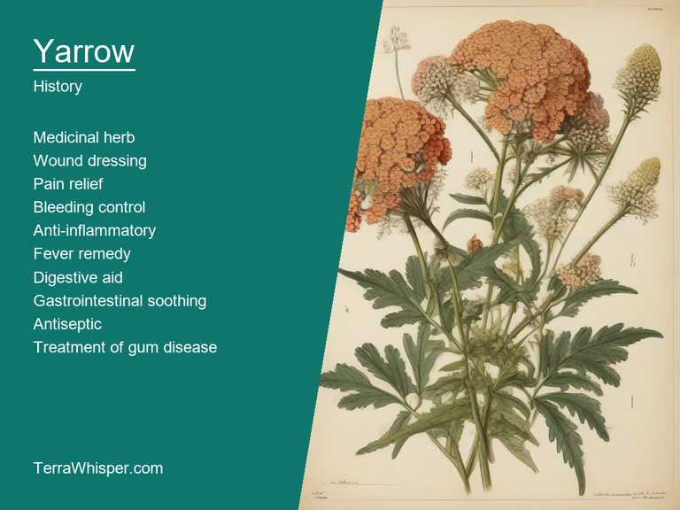

What To Know Before Using Yarrow (Achillea Millefolium)

Yarrow, scientifically known as Achillea millefolium, is a perennial flowering plant that has been used for centuries for its medicinal and culinary properties. The leaves and flowers of yarrow have long been used in traditional medicine to treat various ailments such as wounds, bruises, and inflammation due to their antiseptic and anti-inflammatory properties. In addition, the plant has been used as a culinary herb for flavoring soups, salads, and teas.
Yarrow is also popular among horticulturists and gardeners for its ornamental value. It grows well in various climates and can thrive in both sunny and partially shaded areas. The plant has finely cut leaves that resemble ferns and clusters of small white or pink flowers that bloom from late spring to early fall. These features make yarrow an attractive addition to any garden, especially when planted alongside other perennials or wildflowers.
From a botanical perspective, yarrow is part of the Asteraceae family, which includes daisies and sunflowers. It has feathery leaves that give it its common name "millefolium," meaning thousand leaves in Latin. The plant's flowers are composed of numerous small florets arranged in a flat-topped inflorescence, with each flower head containing both ray and disc florets. Historically, yarrow has been used by various cultures for healing wounds, stopping bleeding, and promoting overall health. It was even believed to have been carried by the mythological hero Achilles during the Trojan War for its medicinal properties. Today, yarrow remains an important plant in both traditional and modern medicine, as well as a beloved addition to gardens worldwide.
In this article, you will discover what are the medicinal and culinary uses of yarrow. Then, you'll learn how to cultivate it, what is its botanical profile, and how it was used historically.
What Are The Medicinal Uses Of Yarrow?
Yarrow (Achillea millefolium) has many health benefits, such as aiding in treating digestive issues, reducing inflammation, improving blood circulation, and soothing skin conditions. This versatile plant has been used for centuries in traditional medicine to address various ailments. It is also known for its diuretic properties which are beneficial in cases of bladder or kidney stones. Additionally, yarrow can act as an antifungal agent and might play a role in relieving symptoms associated with menstruation.
The following illustration lists the most important uses of yarrow in medicine.

The medicinal constituents found in yarrow include volatile oils, flavonoids, tannins, bitter glycosides, and sesquiterpene lactones. These components contribute to the plant's various therapeutic effects. One important compound is achillein, an essential substance that has demonstrated significant antibacterial properties.
The most commonly used parts of the yarrow plant for medicinal purposes are its leaves and flowers, often utilized in making tinctures, teas, salves, or ointments. Its leaves, stem, and roots can also be included to take advantage of a wider range of therapeutic properties. When prepared into essential oil, this fragrant plant provides additional benefits such as relaxation and relief for nasal congestion.
Yarrow, however, should always be consumed or used in moderation due to the potential side effects it may have. Excessive consumption can lead to liver damage, skin reactions like rashes and inflammation, gastrointestinal issues, and allergic reactions for sensitive individuals. It's important to note that yarrow usage shouldn't be combined with anticoagulant medications as this can increase the risk of bleeding.
Before using yarrow for any purpose, it is crucial to consult a healthcare professional or herbalist. This is particularly important when trying to address health issues, as their expert knowledge will help you avoid potential complications and ensure your safe treatment plan. Pregnant women and nursing mothers should also be cautious about using yarrow, as there is limited research on its safety during these stages of life.
What Are The Culinary Uses Of Yarrow?
Yarrow (Achillea millefolium) is a popular herb used in many culinary dishes around the world due to its unique flavor profile and nutritional benefits. It has been used for centuries as a seasoning, garnish, and medicinal ingredient in various cultures, including Chinese, Japanese, Native American, and European cuisines. Yarrow is known for its distinctive, slightly bitter taste that pairs well with many dishes, especially those containing meat, poultry, fish, and vegetables.
The following illustration lists the most common uses of yarrow for culinary purposes.

The flavor of yarrow can be described as mildly astringent and slightly bitter, similar to chicory or dandelion greens. It has a slightly peppery aftertaste that adds depth and complexity to dishes. Yarrow is also known for its fragrant aroma, which is reminiscent of fresh herbs like parsley or cilantro.
Yarrow is an edible plant that can be used in many ways in the culinary world. The leaves are often used as a seasoning or garnish, especially in savory dishes like soups, stews, and salads. The flowers can also be used as a decorative element or added to desserts for a unique floral flavor. Additionally, yarrow seeds and roots can be roasted and ground into a spice blend or used to make tea or tinctures.
When using yarrow in the kitchen, it's important to follow some simple tips to ensure that the herb is cooked properly and safely. First, wash the leaves and flowers thoroughly before using them in dishes. Next, chop the leaves into small pieces or tear the flowers into bite-sized pieces to release their flavor. When cooking with yarrow, be careful not to overcook it as it can become bitter and lose its flavor. Finally, store yarrow in an airtight container in a cool, dry place to preserve its freshness and flavor.
While yarrow is generally safe to eat and has many health benefits, it's important to be aware of its potential side effects and toxicity. Yarrow may cause an allergic reaction in some people, resulting in skin irritation, itching, or hives. It's also recommended that pregnant women avoid consuming yarrow due to its potential to interact with certain medications and increase the risk of miscarriage. Additionally, excessive consumption of yarrow can lead to stomach upset, diarrhea, and dehydration. Therefore, it's important to use yarrow in moderation and follow the recommended guidelines for safe use.
How To Cultivate Yarrow In Your Garden?
Growing Yarrow (Achillea millefolium) is relatively easy, thanks to its ability to thrive in a variety of conditions. To grow yarrow, start by choosing a location with well-draining soil that receives at least six hours of sunlight per day. Plant the seeds or seedlings about 12 inches apart and cover them with a thin layer of soil. Water the plants regularly during the first few weeks after planting to keep the soil moist. Once established, yarrow is drought tolerant and requires minimal watering. To keep your plants healthy and attractive, fertilize them once or twice a year with a balanced, water-soluble fertilizer.
The following illustration lists the most important tips to cutlitvate yarrow.

Yarrow prefers full sun to partial shade and well-drained soil. It is drought tolerant and can thrive in a variety of soil types, including sandy, loamy, and clay soils. The plant grows best when the soil is slightly acidic, with a pH between 6.0 and 7.0. Yarrow requires regular watering during dry periods, but it is also tolerant of periods of drought. To keep your plants healthy, you should remove any dead or diseased leaves and stems as soon as possible.
Once established, yarrow requires minimal maintenance. Prune back the foliage to about six inches above the ground in early spring to promote new growth. Deadhead the flowers regularly to encourage more blooms and prevent the plant from spreading too aggressively. To keep your plants healthy, you should remove any dead or diseased leaves and stems as soon as possible. Yarrow is also susceptible to aphids and other pests, so it's important to monitor the plants regularly and take action if necessary.
What Is The Botanical Profile Of Yarrow?
Yarrow (Achillea millefolium) is a flowering plant that belongs to the domain Eukarya, kingdom Plantae, phylum Magnoliophyta, class Liliopsida, order Asterales, family Asteraceae, genus Achillea, and species millefolium. The common names for yarrow include Milkweed, Nettle-leaved yarrow, Wild yarrow, Mountain yarrow, Groundsel, Common yarrow, English yarrow, and Cow parsley.
The following illustration display the botanical profile of yarrow.

Yarrow is a perennial herbaceous plant that grows to a height of 30-60 cm and has a rosette of foliage. The leaves are lanceolate, with serrated or lobed edges, and are arranged in an alternate pattern. The flowers are borne on tall stalks and have ray florets that are white or pink, with yellow or red centers.
There are several variants of yarrow, including the smooth-leafed yarrow (Achillea millefolium var. nodosa), the lobed-leafed yarrow (Achillea millefolium var. cervicornis), and the hairy-stemmed yarrow (Achillea millefolium var. hispanica). Smooth-leafed yarrow has round or oval leaves with smooth edges, while lobed-leafed yarrow has deeply lobed leaves. Hairy-stemmed yarrow has hairy stems and leaves.
Yarrow is native to Europe, Asia, and North America, and is widely distributed throughout the world. It grows in fields, meadows, and woodlands, and can also be found along roadsides and in urban areas. Yarrow prefers well-drained soil and full sun exposure, but can tolerate partial shade and moist conditions.
The life cycle of yarrow is biennial, meaning it completes two growth cycles in two years. In the first year, the plant produces a rosette of leaves, which die back over winter. In the second year, a new rosette of leaves grows and flowers are produced on a stalk that arises from the center of the rosette. The seeds are then dispersed by wind or animals.
What Are The Historical Uses Of Yarrow?
The origin of "yarrow" name can be traced back to an ancient Greek mythological hero named Achilles who was given this herb by a centaur called Chiron as part of his healing treatment for various injuries that he sustained during the Trojan War. It is believed from where we get its botanical genus, 'Achillea', which means "of Achillas," or related to him in some form either culturally and biologically; therefore, it's called by many names such as milfoil (referring for tiny leaves), nosebleed plant(because of its properties on stopping bleeding)and much more.
The following illustration lists the most well known historical uses of yarrow.

Yarrow has been known from prehistoric times all across the globe because people have used this herb to treat various ails and illnesses, including stomachaches due to flatulence or indigestion caused by an impurification of blood resulting in jaundice (yellow skin), which might've led it being associated with medicinal use. It was valued immensely as well for its application against bacterial infection such diarrhea and cholera, making this humble herb a symbolic figure within traditional medicine practices over different civilizations spanning across many centuries - showing cultural importance attached to Yarrow's healing properties that transcend time.
The mythological roots of yarrow are deeply rooted in numerous legends and beliefs; one being about Saint Blaise, who was associated with relief from illness related throats problems including sore throat due to a tradition associating its flowers having similar colors found near where he supposedly met his martyrdom. Another story revolves around the character Aoife (pronounced Eee-Fa), an Irish warrior woman said to have been cursed into shape that her blood would never clot, symbolic of perpetual bleeding; she was given yarrow by a wise man which eventually stopped this curse making its leaves often being considered as symbols for healing and protection.
Literary references showcase the importance accorded with Achillea millefolium in literature over history stretches right back into classic pieces such The Epic of Gilgamesh (18th-century BC), an Akkadian epic poem which highlights numerous botanical elements including yarrow leaves while depicting various healing properties, reflective their value during ancient times. In Shakespeare's ‘A Midsummer Night's Dream', Titania describes it as 'Jewelry of the field', referring again both visually pleasing appearance and its medicinal uses; furthermore in modern poetry & prose like Rudyard Kipling or even Ayn Rand, Yarrow remains relevant due to their association with nature imagery - often times symbolizing hope amidst despair.
Folkloristic practices surrounding yarrow usage date back from being planted along graves as offerings for the dead; in some cultures it would prevent supernatural forces access into funerary sites, hence providing protection against evil spirits or malevolent entities that are common components of various folklores around world. In other instances this humble herb had become deeply woven with certain festivities - becoming incorporated through customs such as wedding flower arrangements whereby these petals may either represent good fortune in marriage or even purity between partners depending upon its particular meaning among cultures involved therein which speaks volumes about the adaptability and perseverance of this remarkable plant over centuries.